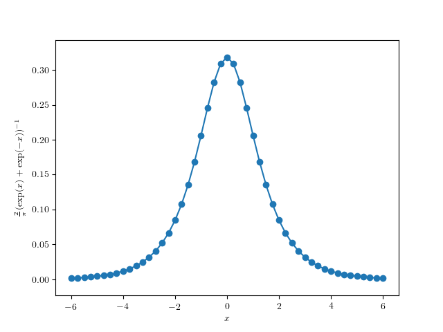

El método Monte Carlo es idóneo para situaciones en las cuales algún valor o alguna distribución no se conoce y resulta complicado de determinar de manera analítica. Siguiendo los ejemplos de Kurt [8], paralelizamos algunos casos sencillos en esta práctica. Es importante tomar en cuenta que el método Monte Carlo es mucho más que estos pequeños ejemplos; el lector interesado puede profundizar con los libros de texto [9, 10] recomendados en la bibliografía.
Supongamos que se ocupa conocer el valor de un integral que no se nos antoja resolver para nada, como por ejemplo $\int_3^7 f(x) \text{d}x$ para
$f(x) = \displaystyle\frac{1}{\exp(x) + \exp(-x)}$.
Por suerte, $2f(x)/\pi$ es una función de distribución válida, ya que
$\displaystyle\int_{-\infty}^{\infty} \frac{2}{\pi} f(x) \text{d}x = 1$
(para los de poca fe; existe Wolfram Alpha).
inicio <- -6
final <- -inicio
paso <- 0.25
x <- seq(inicio, final, paso)
f <- function(x) { return(1 / (exp(x) + exp(-x))) }
png("p5f.png") # dibujamos f(x) para ver como es
plot(x, (2/pi) * (1/(exp(x)+exp(-x))))
lines(x, (2/pi) * (1/(exp(x)+exp(-x))), type="l")
graphics.off()
inicio = -6.0
final = -inicio
paso = 0.25
X = [inicio]
while X[-1] + paso <= final:
X.append(X[-1] + paso)
from math import exp, pi
def f(x):
return 1 / (exp(x) + exp(-x))
from matplotlib import rc
import matplotlib.pyplot as plt
Y = [(2 / pi) * f(x) for x in X]
plt.rc('text', usetex=True) # requiere LaTeX
plt.rc('font', family='serif')
plt.scatter(X, Y)
plt.plot(X, Y)
plt.xlabel(r'$x$')
plt.ylabel(r'$\frac{2}{\pi} (\exp(x) + \exp(-x))^{-1}$')
plt.savefig('p5pf.png')
plt.show() # opcional

Este hecho nos permite generar números pseudoaleatorios con la distribución $g(x) = 2f(x) / \pi$, así estimar $\int_3^7 g(x) \text{d}x$, y de ahí normalizar el estimado para que sea $\int_3^7 f(x) \text{d}x$.
distr (recuerden
llamar install.packages antes de intentar a utilizar el
nuevo paquete) — discusión
relacionada en stack overflowGeneralRandom
proveniente de
una receta
con unos cambios para adecuarlo a Python3, ya que viene escrito en
Python2 (fue necesario cambiar xrange por range) — se debe colocar en la misma carpeta con el
código propio para que se pueda incluirTeniendo eso, se puede proceder a estimar la integral deseada:
$ Rscript integral.R
[1] 0.04883505
$ python3 integral.py
0.04670913674171997
Podemos comparar con el resultado aproximado de Wolfram Alpha, $0.048834$, para llegar a una satisfacción de que no estemos completamente mal. Nota que cada ejecución dará un resultado distinto ya que es una muestra pseudoaleatoria. Parece que la rutina de generar valores pseudoaleatorias de una distribución arbitraria de R está un poco más refinado que la rutina de la receta en Python.
Estudia estadísticamente la convergencia de la precisión del estimado del integral con en método Monte Carlo, comparando con el valor producido por Wolfram Alpha, en términos del número de decimales correctos, aumentando el tamaño de muestra.
El primer reto es realizar lo mismo para la estimación del valor de $\pi$ de Kurt [8].
Como un segundo reto, aplica un método Monte Carlo para estimar la cantidad de pintura necesaria en un mural, comparando conteos exactos de pixeles de distintos colores (recomiendo discretizar a un palette de pocos colores) con conteos estimados con muestreo aleatorio.
https://satuelisa.github.io/p5.html